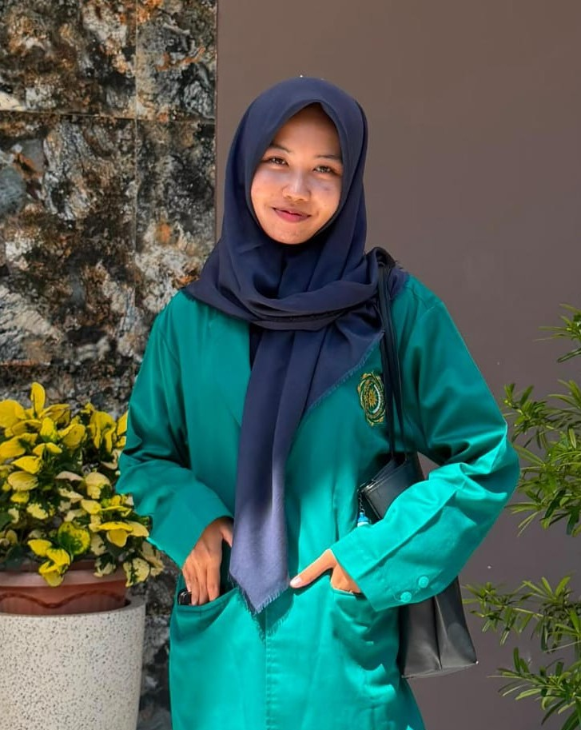
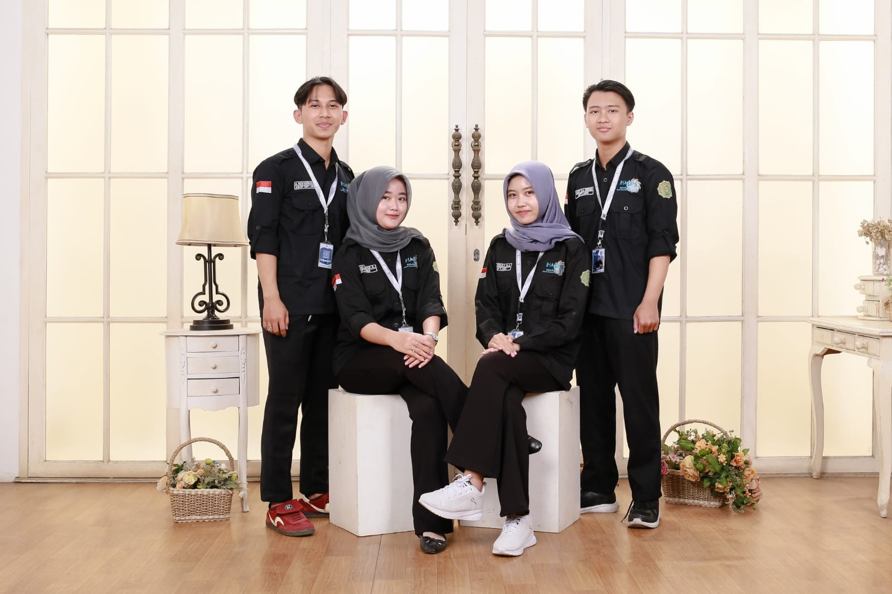

Halo! Saya Marissa Mifta Aulia. Sebagai mahasiswa, saya sangat menyukai ketelitian angka dalam matematika dasar karena membantu saya melatih logika, memecahkan masalah secara runut, dan menyelesaikan tugas kuliah dengan terstruktur.
Di samping itu, musik adalah bagian besar dari hidup saya; menyanyi lagu Jawa menjadi hobi utama sehari-hari yang selalu menjadi sarana untuk berekspresi sekaligus penyegar pikiran di tengah kesibukan akademis.
Sebagai seorang mahasiswa, saya percaya bahwa keseimbangan otak kiri dan otak kanan adalah kunci untuk terus berkembang. Melalui ketertarikan saya pada matematika dasar, saya terbiasa melatih cara berpikir yang logis, menganalisis situasi secara terukur, serta menyelesaikan tugas dengan penuh ketelitian.
Menyanyi adalah hobi sehari-hari yang menjadi bagian tak terpisahkan dari hidup saya. Musik, terutama lagu-lagu Jawa, bukan hanya sekadar hiburan bagi saya, tetapi juga cara untuk menyegarkan pikiran, menjaga kreativitas, dan membangun rasa percaya diri.
